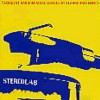
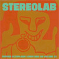
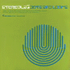
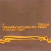
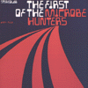
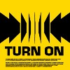
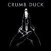
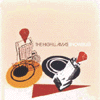
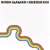

strange music page
overseas * * * stereolab
#7曲目、まるっきりノイ！です。

- TONE BURST
- OUR TRINITONE BLAST
- PACK YR ROMANTIC MIND
- I'M GOING OUT OF MY WAY
- GOLDEN BALL
- PAUSE
- JENNY ONDIOLINE
- ANALOGUE ROCK
- CREST
- LOCK-GROOVE LULLABY
- FRENCH DISCO
- Duncan Brown (bass,twang guitar,speaking)
- Tim Gane (guitars,vox organ,moog,banjo,tambourine)
- Mary Hansen (vocals,tambourine,guitars)
- Sean O'Hagan (vox organ,farfisa,filmy guitars)
- Andy Ramsay (percussions,vox organ,bazouki)
- Latitia Sadier (vocals,vox organ,guitars,tambourine,moog)
eastwest japan: AMCY-2531 (1993)
#初期のNEU!/CANみたいな荒い電子音の反復による高揚感を生み出すよな音から、Mary+Latitiaの女性ボーカル×2を効果的に使ったポップな音になる過渡期なのかな？最近のアルバムみたいに緻密な音でなくて、まだまだオルガンのガピーって音が聴こえます。リズムも単調だし。
んでも、8曲目とかの「DOTS AND LOOPS」とかにも通じる
ミニマルでポップスみたいな感じが好きです。裏でファズかけたギターがガヒョーって鳴ってるけど。
- THREE-DEE MELODIE
- WOW AND FLUTTER
- TRANSONA FIVE
- DES ETOILES ELECTRONIQUES
- PING PONG
- ANAMORPHOSE
- THREE LONGERS LATER
- NIHILIST ASSAULT GROUP
- INTERNATIONAL COLOURING CONTEST
- THE STARS OUR DESTINATION
- TRANSPORTE SANS BOUGER
- L'ENFER DES FROMES
- OUTER ACCELERATOR
- NEW ORTHOPHONY
- FIERY YELLOW
- Duncan Brown (bass)
- Tim Gane (guitars,vox organ,farfisa,moog,bass)
- Katherine Gifford (farfisa,vox organ,moog,backing vocals)
- Mary Hansen (vocals,guitars,tambourine,eggs)
- Andy Ramsay (drums,percussions)
- Latitia Sadier (vocals,tambourine,vox organ,mint's organ,guitars)
- Sean O'Hagan (bass,marimba,slide guitars on 15.)(twang guitar on 5.)(tremolo guitars on 9.)
- Vera Daucher (violin)
- Jean-Baptiste Garnero (backing vocals on 11.)
- Andy Robinson (trombone)
- Alan Carter (tenor sax,flute)
- Lindsay Low (trumpet)
ELEKTRA: 61669-2 (1994)
#ステレオラブのアルバム未収録曲とかレア音源とかを集めた、「SWITCHED ON」のVolume 2です。
1/12曲目は1stの頃の編成(ベースのクレジットが無いけど)、他はまぁ色々。Nurth with Windと一緒にやったEPのStereolabサイド(6/9曲目)なんかも入ってます。「Tone Burst」のカントリー調？みたいなぬる～い録音とか可笑しい。
「Emperor Tomato Ketchap」以前の録音ばかりで、荒削りな感じの曲が多いです。まんまノイ！みたいなヤツとかも一杯。
オルガンの持続音がイイなぁ～なんて今更ながらに思ったりもします。(2003.12.21)

- Harmonium
- Lo Boob Oscillator
- Mountain
- Revox
- French Disko
- Exploding Head Movie
- Eloge D'eros
- Tone Burst [Country]
- Aniaml or Vegetable [A Wonderful Wooden Reason...]
- John Cage Bubblegum
- Sadistic
- Farfisa
- Tempter
- Tim Gane (moog,farfisa,guitars)
- Laetitia Sadier (vocals)
- Mary Hansen (vocals on 2-7.9-11.13.)
- Duncan Brown (bass on 2.5.6.9.)
- Andy Ramsay (drums on 2-11.13.)
- Sean O'Hagan (organ on 5.6.9.)
- Joe Dilworth (drums on 1.12.)
- Katherine Gifford (organ on 2.13.)
- Martin Kean (bass on 3.4.7.10.11.)
DRAG CITY: DC82CD (1995)
#なーぜか、タイトルは寺山修司の演劇"トマトケチャップ皇帝"から。ステレオラブで一番有名なアルバムかな？洗練されたポップな曲満載です。滑らかでカワイイ感触のエレポップ。

- Metronomic Underground
- Cybele's Reverie
- Percolator
- Les Yper-Sound
- Spark Plug
- Olv 26
- The Noise of Carpet
- Tomorrow Is Already Here
- Emperor Tomato Ketchup
- Monstre Sacre
- Motoroller Scalatron
- Slow Fast Hazel
- Anonymous Collective
- Brigitte
- Tim Gane
- Laetitia Sadier
- Mary Hansen
- Duncan Brown
- Andy Ramsay
- Sean O' Hagan
#ホリコシさんの家から借りてきました。このあたり聴かせてもらうのはいつもホリコシさんからかも、いつもサンクスです。ちなみに明け方コレを聴きながら車で帰ろうとしたら猛烈に眠くなってきて、途中で車止めて寝ちゃいました。
ステレオラブのライヴ行ったすぐ後に借りました、ステレオラブはCD聴く度にどーやって演奏してるのか気になってたんですけど、ライヴを見たらまぁシンプルな事で。あのシンプルな演奏でここまで立体的な音を作るのかと思うと、すごい感心しました。
あと、3.5.10.はデュッセルドルフ録音で、MOUSE ON MARSの人がプロデュースしてますね。他はトータスのJ.McEntireとハイラマズのS.O'Haganです、なんだかやっぱりあの辺りの人達ですね。(2000.2.19)

- Brakhage
- Miss Modular
- The Flower Called Nowhere
- Diagonals
- Prisoner Of Mars
- Rainbow Conversation
- Refractions In The Plastic Pulse
- Parsec
- Ticker Tape Of The Unconscious
- Contronatura
- Off-On
- Tim Gane
- Mary Hansen
- Richard Harrison
- Morgane Lhote
- Laetitia Sadier
- Andrew Lamsey
- Sean O'Hagan (piano,fender rhodes,farfisa organ)
- John McEntire (analog synthesizers,electronic devices,percussions,vibes,marimba)
- Douglas McCombs (acoustic bass on 1.)
- Andi Toma (electronics,electronic percussions)
- Jan St.Werner (special electronics,insect horns)
east west japan: AMCY-2358 (1997.9.25)
#友達から借りました、来日ライヴ用お勉強盤として。んでも明後日にステレオラブ見に行くので全部聴いてるヒマは無さそうだったりしますけど。
未発表曲、未発表テイク、シングル等のレア音源集みたいですね。ステレオラブってこーゆーCDやたら多いような気がしますけど。
ミニマルでポップな音、リフ一個で一曲みたいなのが多いですけど、それでも微妙にキモチイイ感覚。(2000.2.14)
- Pop Quiz
- The Extension Trip
- How To Play Your Internal Organs Overnight
- The Brush Descends The Length
- Melochord Seventy-five
- Space Moment
- Iron Man
- The Long Hair Of Death
- You used To Call Me Sadness
- New Orthophony (full version)
- Speedy Car
- Golden Atoms
- Ulan Bator
- One Small Step
- One Note Samba/Surfboard (fullversion)
- Cadriopo
- Klang Tone
- Get Carter
- 1000 Miles An Hour
- Percolations (John McEntire remix)
- Freestyle Dumpling
- Check And Double Check
- Munich Madness
- Metronomic Underground (Wagon Christ mix)
- The Incredible He Woman
east west japan: AMCY-2871/2 (1998.10.1)
#えっと、宮前平の駅前で人待ちしてるときに本屋で今日発売な事を知り、となりのCD屋で購入。洋楽の新譜なんて本当に久しぶりに買います。
元ガスターデルソルのJim O'RoukeとトータスのJohn McEntireのプロデュースの曲が半々です。11.とかイントロでガスターみたいでちょっと鬱陶しいけど。なんていうか流石のきもちいいエレポップです。
でも1曲目のイントロはR.Wyattの1枚目にソックリだけどさ。(1999.9.14)

- Fuses
- People Do It All The Time
- The Free Design
- Blips, Drips And Strips
- Italian Shoes Continuum
- Infinity Girl
- The Spiracles
- Op Hop Detonation
- Puncture In The Radax Permutation
- Velvet Water
- Blue Milk
- Caleidoscopic Gaze
- Strobo Acceleration
- The Emergency Kisses
- Come And Play In The Milky Night
- Galaxidion
- Escape Pod (From The World Of Medical Observations)
- With Friends Like These
- Les Aimies Des Memes
track 3.5.7.9.11.12.14. produced by Jim O'Rouke
track 1.2.4.6.8.10.13.15. produced by John Mcentire
- Laetitia Sadier
- Mary Hansen
- Tim Gane
- Andy Ramsay
- Morgan Lhote
east west japan: AMCY-7066 (1999.9.15)
#なんだか長いタイトルのが続きますね、前作が1999.9だったから1年も経ってないのに次のアルバム。妙にハイペースなような。
こないだの来日見てるからハイペースなような気がするのかな?
前作ミルキーナイトでだいぶナマ楽器の占める割合が増えてましたが、その路線を踏襲したようなアルバム、ミルキーナイト#2って感じもします。ジャケのフォントも同じままだし。
まぁまたしても借りモノで買って無いんです、もう円熟っていうかベテランっぽいですね。さらっとこんなに完成度の高いの作れてるんだとしたら、すごい良いポテンシャルを維持しつづけてるんでしょうね。もーちょい突き抜けたようなモノを期待するのは贅沢かな？(2000.9.2)

- Outer Bongolia
- Intervals
- Barock - Plastik
- Nomus Et Phusis (無形の法則と有形の法則)
- I Feel The Air (Of Another Planet)
- Household Names
- Retrograde Mirror Form
- Laetitia Sadier
- Mary Hansen
- Tim Gane
- Andy Ramsay
- Morgan Lhote
east west japan: AMCY-7169 (2000.6)
#2002年の年末にMary Hansenが不慮の事故で亡くなってから、初のフルアルバム。何か一曲目のイントロがとっても格好良いです、スネア6拍分だけ右チャンネルだけで聴こえて最後の2拍でステレオに、その後フワフワしたシーケンスがはじまるっていう。道の角を曲がったらとても可愛い女の子がいきなりいたよーな感じのイントロ。自分史上、1,2を争うイントロかも。
最近のアコースティック楽器を絶妙に処理したよーな感じから、ちょっと昔の（DOTS AND LOOPSとか、今回もmouse on marsの人参加してます）キュートな電子音路線に戻った感じも有ります。リズムが凝ってて面白いぃ。前作は買ってないんですけど、相変わらず良いです。
でもボーカル一人分足りないのがちょっと寂しいような気もしますけど。改めて合掌。
あ、国内盤はボーナス一曲プラスだったんですけど、買う前に
こないだのダメ解説が頭をよぎって輸入盤を買っちゃいました。 (2004.2.8)
（→
www.stereolab.co.uk）

- Vonal Declosion
- Need To Be
- "...sudden stars"
- Cosmic Counrty Noir
- La Demeure
- Margerine Rock
- The Man with 100 Cells
- Margerine Melody
- Hillbilly Motobike
- Feel And Triple
- Bop Scotch
- Dear Marge
- Andy Ramsay (drums,drum machine)
- Simon Johns (bass)(2nd drum kit on 6.)
- Tim Gane (guitars,electronics,organ)
- Laetitia Sadier (vocals)(trombone on 8.)
- Dominic Jeffery (organ,electric piano,harpsichord,celeste)
- Sean O'Hagan (keyboards,guitars)
- Jan st.Werner (electronics on 1.10.)
- Fulton Dingley (drum machine,synthesizers)
ELEKTRA: 7559-62926-2 (2004.2.2)
#えーとステレオラブのT.GaneとA.RamsayとS.Haganのプロジェクトみたいなモノ。吉祥寺バナナレコードにて\800でした。内容はほとんどインストのステレブですね。エレクトロラウンジってな感じでしょうか？
実験音楽とポップと半々くらいの感じに聞こえました、休日向け音楽かも(特に根拠無し)。(2000.5.7)

- ELECTROCATION OF FIRE ANTS
- PLASMIDS
- RU TENONE
- UNITED STATES OF SURREALISM
- YOUNG CHERRY TREES SECURED
- TRIPLE CAUSE OF POETRY
- DELIMITING
- JUMBLED PALIPSEST
- GIMMICKRY SENSATIONAL HOAX
- GIMMICKRY HOAX SENSATION
- Sean O'Hagan
- Tim Gane
- Andy Ramsay
- Laetitia Sadier (vocals on 3.)
DRAG CITY: DC131CD (1997)
#えーと吉祥寺ディスクユニオンにて。NURSE WITH WOUNDは80年代ノイズの人達だと思ってました(STEREOLABと一緒にやってるなんて全然知らなかった)でもって中身は1,2曲目がNURSE WITH WOUNDの7"で、3.4曲目がSTEREOLABとの共演。大笑いなのが3曲目......完全に
NEU!の2枚目の1曲目のパクリでした。ノイっぽいとかそういう事じゃなくって、完全に一緒です。STEREOLABにもノイみたいな曲は結構有りますけど、こんなあからさまなのも珍しいかも？ちょっと安易すぎるよーな気もしました。
4曲目は逆にN.W.W.主導の曲みたいです、こっちは何だか....CANみたいな感じですねぇ。好みな音なので別にかまわないんですけど、もうちょい意外さが欲しかったかも。ちなみに\1000でした。

- Steel Dream March of the Metal Man
- The Dadda's Intoxication
- Exploding Head Movie
- Animal Or Vegetable (a wonderful wooden reason)
- A New Dress (Remix)
- Steven Stapleton (percussions,looping,generator,tapes,pedals,etc...)
- Colin Potter (sound manipulation on 1.2.)
- Tim Gane (farfisa,guitars on 3.4.)
- Laetitia Sadier (vocals on 3.4.)
- Mary Hansen (vocals on 3.4.)
- Andy Ramsey (drums on 3.4.)
- Sean O'Hagan (organ on 3.4.)
David Kenny (guitars on 4.)
UNITED DAIRIES: U.D.059CD (1996)
#友達に借りました、彼は「だるい感じ」とか言ってたんですけど、けっこう気に入ってます。ポップでリラックスしててキモチの良い音楽です。またJim O'Roukeの名前が有るんですけど、このアルバムではあんまりエレクトロな感じにしなくて、アコースティックなそのままの質感になってます、大正解かも。

- Bach Ze
- Harpers Romo
- Hoops Hooley
- Cookie Bay
- Triads
- The American Scene
- Go To Montecito
- Janet Jangle
- Amin
- Daltons Star
- Cotton To The Hell
- Green Coaster
- Cut The Dummy Loose
- Beach Bunch
- Shuggie Todd
- Sean O'Hagan
- Rob Allum
- Jon Fell
- Marcus Holdway
- Laetitia Sadier (vocals)
- Mary Hansen (vocals)
- John McEntire (vibes,marimba,shaker,electronics)
- John Telfer (baritone sax,tenor sax)
- Andy Robinson (trombone)
- Marc Bassey (trombone)
- Steve Waterman (flugelhorn,trumpet)
- Colin Crawley (tenor sax,flute)
V2 RECORDS JAPAN: V2CI-58 (1999.10.6)
#コレと
Sea and Cakeの新譜が一緒に並んでて、Sea and Cakeの方を買っちゃいました、こないだ。
しばらくして友達の家に行ったら彼が買ってました、ナイスです、グッドチョイスです。とりあえず借りてきました。
前作の路線を踏襲した、ほんわか和みの気持ち電子音入ったポップスです。ちょーっと今回はダラダラしすぎの感もありますけど(なんか試聴してそんな感じだったから買わなかったんだけど)。もうちょい弾けて頂いてた方が私は嬉しかったかも。
あ、でも貸してくれてサンクス＞トクタケ。
(2000.10.29)

- The Passing Bell
- Pat Mingus
- Get Into The Galley Shop
- Switch Pavilion
- Tambourine Day
- Sleeping Spray
- New Broadway
- Bobby's Court
- 2 Part Byke
- Sean O'Hagan
- Rob Allum
- Jon Fell
- Marcus Holdway
- Dominic Murcott (vibes,marimba)
- Pete Aves (12 string guitar)
- John Bennett (slide guitar)
V2 RECORDS JAPAN: V2CI-85 (2000.9.20 - Duophonic Super 45s)